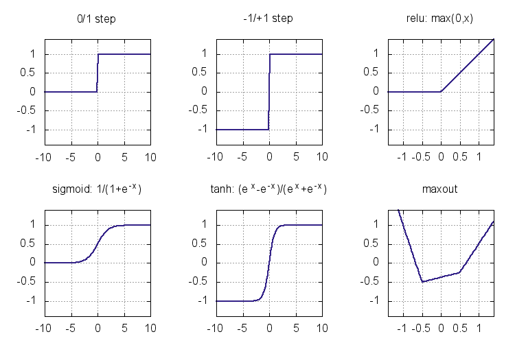
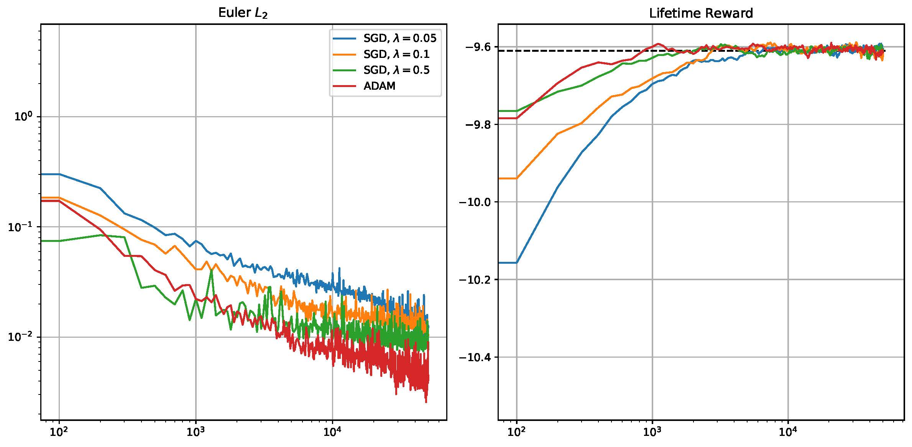
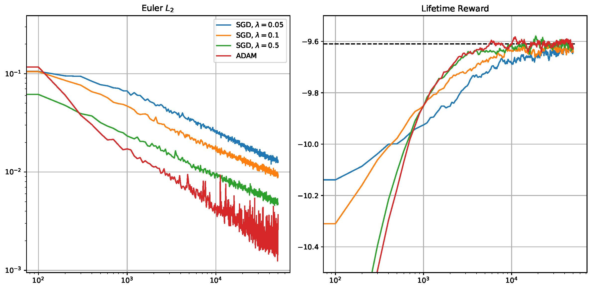
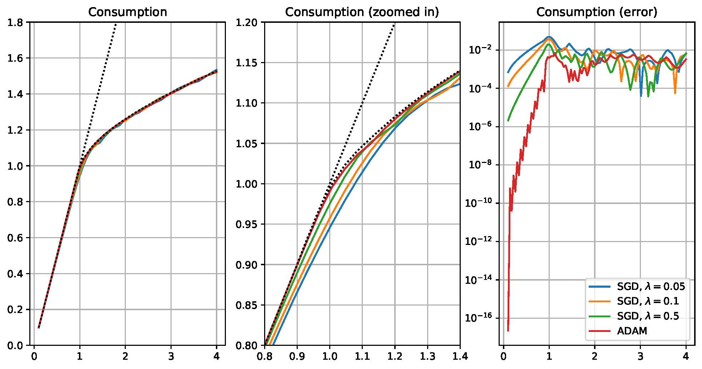

Introduction to deeplearning
Neural networks
Clarifications:
- neural networks and neurons in our brains are two distinct concepts
- brains do things in different ways (e.g. long range connections)
- NN are fast and their organization is not always inspired by the brain
The Perceptron
First neural neuron, the perception, invented by a psychologist, Dr Rosenblatt (1952):

Modern neural model
Evolution of the model:
- arbitrary activation function \(f\)


Activation functions
- heavyside function: \(h(x)=1_{x \geq 0}\)
- sigmoid (logistic): \(\sigma(x)=\frac{1}{1+e^{-x}}\)
- cool fact: \(\sigma^\prime(x)=\sigma(x)(1-\sigma(x))\)
- arctan
- relu: \(r(x)=x*1_{x \geq 0}\)
- leaky relu: \(r(x)=\kappa x 1_{x < 0} + 1_{x \geq 0}\)
Activation functions
Topologies (feed forward 1)
Multilayer perceptron:
\[A_0(\tau_1 (A_1 \tau_2 (A_2 (.... ) + B_2)) )+ B_1\]
where the \(\tau_i\) are activation functions, A the weights, B the biases.

Topologies (feed forward 2)
- Convolutional networks:
- recognize/classify images
- used for features extraction in other algos
- Encoder

Topologies (others)
Recurrent neural network
- have a memory
- useful for sequential data (speech, text)

Training a neural network
Overall a neural network is a (very) nonlinear approximation function \(f(x; \theta)\) which depends on a lot of deep parameters \(\theta\).
They can be trained to perform a specific objective. For instance to fit some data \((x_n,y_n)\)
\[\min_{\theta} \sum_i (f(x_i, \theta) - y_i)^2\]
More accurately if we have access to a random subset \(\epsilon\in \cal{D}\) of the data (or the generating process), we want to perform
\[\min_{\theta} \Xi(\theta) = \min_{\theta} E_{\epsilon} \underbrace{\sum_{(x_i,y_i)\in D} (f(x_i, \theta) - y_i)^2}_{\xi(\epsilon, \theta)}\]
\(\xi(\theta)\) is called “empirical risk”, while \(\Xi(\theta)\) is called “theoretical risk”.
This is can be done for regression or classification tasks. Check tensor playground
Why does it work now?
- computational neural networks have been around for a while
- perceptron 1952
- popular in the 80s, less so in th 90s
- all the rage again (with deeper networks)
- a new technological stack
- vectorization and parallel computing
- GPUS (1920 cores on gtx 1070!)
- cloud computing
- software stack:
- git, linux
- theano, tensorflow, pytorch, jax…
- vectorization and parallel computing
Learning: stochastic gradient descent and friends
Optimization
How do we optimize the function \(\Xi(\theta)\) ?
Gradient descent
Consider the scalar function \(\Xi(\theta)\) where \(\theta\) is a vector. How do we optimize it?
Denote the gradient of the objective by:
\[\nabla_{\theta}= \begin{bmatrix} \frac{\partial}{\partial \theta_1} \\\\...\\\\\frac{\partial}{\partial \theta_n} \end{bmatrix}\]
Gradient descent: follow to steepest slope, apply a learning rate \(\gamma\).
\[\theta \leftarrow \theta - \gamma \nabla_{\theta}\Xi(\theta)\]
Variants of Gradient Descent
Momentum: (ball goes down the hill, \(\gamma\) is air-resistence)
\[v_t = \gamma v_{t-1} + \eta \nabla_{\theta} J(\theta)\] \[\theta \leftarrow \theta - v_t\]
Nesterov Momentum: (slow down before going up…)
\[v_t = \gamma v_{t-1} + \eta \nabla_{\theta} J\left(\theta-\gamma v_{t-1}\right)\] \[\theta \leftarrow \theta - v_t\]
Variants of Gradient Descent (2)
Learning rate annealing
\[\eta_t = \eta_0 / ({1+\kappa t})\]
Parameter specific updates (ADAM)
\[m_t = \beta_1 m_{t-1} + (1-\beta_1) g_t\] \[v_t = \beta_2 v_{t-1} + (1-\beta_2) g_t^2\]
\[\theta_{t+1} \leftarrow \theta_t-\frac{\eta}{\sqrt{\frac{v_t}{1-\beta_2^t}+\epsilon}}\frac{m_t}{1-\beta_1^t}\]
see AdaGrad, AdaMax, Rmsprop
Problem 1: overshooting

Problem 2: saddle points

Problem 3: function is not smooth

Stochastic gradient descent
Given \(\epsilon \sim \mathcal{D}\), minimize \[\Xi(\theta)=E J(\theta,\epsilon)\]
Idea: draw a random \(\epsilon_t\) at each step and do: \[\theta\leftarrow \theta + \gamma \nabla J(\theta,\epsilon_t)\]
It works !1
- Reason: \(\nabla_{\theta}\Xi = E\left[ \nabla_{\theta} J(\theta,\epsilon) \right]\)
- \(\gamma\) small, the cumulative last steps (\(\sum_k \gamma^k \nabla_{\theta} J(\theta_{t-k},\epsilon_{t-k})\) ) are close to unbiased
- logic extends to other GD algorithms
Stochastic gradient descent (2)
Can escape local minima (with annealing)
Gradient is estimated from a random mini-batch \((\epsilon_1, ... \epsilon_{N_m})\)
\[\theta\leftarrow \theta + \gamma \sum_{i=1:N_m} \nabla J(\theta,\epsilon^i)\]
Common case: dataset set finite \((\epsilon_1, ..., \epsilon_N)\)
- batch gradient: full dataset
- mini-batch gradient: random (shuffled) \((\epsilon_i)_{i \in 1:N_m}\)
- stochastic gradient: one point
Solving models
Introduction (1)
- Deeplearning has many impressive applications
- reconstruct images/scenes, produce original Chopin music or BOE speeches, play Go…
- Works in “you know more than you think applications”
- algorithmically/mathematically complex
- easy to do by trained humans
- Solving a rational expectation model should be easy!
- right?
Introduction (2)
- We offer a unified approach for casting three fundamental objects of economic dynamics -lifetime reward, Bellman equation, Euler equation- into deep learning objective function
- We show how to solve economic models on random grids (stochastic optimization)
- We introduce “all-in-one expectation operator” that merges all randomness into one operator
- We use Google TensorFlow - the software that led to break-ground applications in data science; see code in https://notes.quantecon.org/submission
- today: I’ ll show th code with JAX ;)
How can we solve so huge models?
- Neural network performs model reduction: It extracts information from many inputs and condenses it into a small set of hidden layers
- Neural network deals with ill conditioning: It learns to ignore redundant and collinear variables
- We solve the high-dimensional Krusell-Smith model using stochastic simulation: We focus on the ergodic set in which the solution “lives”
- Taken together, these three features allow us to deal with a huge state space of 2,001 variables
Method
- Define the objective function \(\Xi_{n} (\theta)=\frac{1}{n} \sum _{i=1}^{n} \xi (x_{i};\varphi ( \cdot ;\theta ))\), where \(\{ x_{i} \} _{i=1}^{n}\) is the given set of features (data points).
- Define a family of parametric functions \(\{ \varphi ( \cdot ;\theta ) : \theta \in \mathbb{R}^{d_{\theta }} \}\).
- Train the machine, i.e., find \(\theta\) that minimizes the objectives.
- Check accuracy of the constructed approximation.
We are just left to frame the economic model as an objective for the empirical risk!
Consumption-saving problem with multiple shocks
\[\underset{ c_{t},w_{t+1} }{\max}E_{0}[\sum_{t=0}^{\infty }\beta ^{t}e^{\color{\red}\chi_{\color{\red}t}}u( {c_{t}})]\]
s.t. \(w_{t+1}=re^{\color{\red}\varrho_{\color{\red}t}}( w_{t}-c_{t})+e^{\color{\red}y_{\color{\red}t}}e^{\color{\red}p_{\color{\red}t} }\),
\(c_{t}\leq w_{t}\),
\(( z_{0},w_{0})\) given.
\(c_{t}\) = consumption; \(w_{t}\) = cash-on-hand; \(r\in ( 0,\frac{1}{\beta })\).
each \(z_t\in \{ y_t,p_t,\varrho_t ,\chi_t \}\) follows an AR(1) process: \(z_{t+1}=\rho z_{t}+\sigma\epsilon_{t+1}\).
Optimality conditions
- Kuhn-Tucker conditions:
\(c-w\leq 0\), \(h\geq 0\) and \(( c-w) h=0\), \[h\equiv u^{\prime }(c)e^{\chi -\varrho }-\beta rE[ u^{\prime}( c^{\prime }) e^{\chi ^{\prime }}] = \text{Lagrange multiplier}\]
- Bellman equation:
\(V( z,w) =\underset{c,w^{\prime }}{\max } \\\{ u(c)+\beta E_{\epsilon }[ V( z^{\prime },w^{\prime }) ] \\\}\)
Objective 1: Lifetime reward maximization
- Parameterize consumption function \(c ( \cdot ;\theta )\)
- Construct the objective:
\[\Xi (\theta ) \equiv E_{z_{0},w_{0},\epsilon_{1},...,\epsilon_{T} }[ \sum_{t=0}^{T}\beta ^{t}u( c(z_{t},w_{t};\theta ) ) ]\]
- \(E_{z_{0},w_{0},\epsilon_{1},...,\epsilon_{T} }\) has two types of randomness: a random state \((z_{0},w_{0})\) and random future shocks \(\left( \epsilon_{1},...,\epsilon_{T}\right)\)
- We call \(E_{ . }\) all-in-one expectation operator: it summarizes all random variables in one place
Objective 1: Lifetime reward maximization (cont.)
Lifetime reward in the baseline model.
Objective 2: Euler-equation method with Kuhn-Tucker conditions
- Fischer-Burmeister (FB) function:
- \(\Psi ^{FB}( a,b) =a+b-\sqrt{a^{2}+b^{2}}=0\)
- with \(a=c-w\) and \(b=u^{\prime} (c)- \beta re^{\varrho_{t}}E_{\epsilon }[ u^{\prime }( c^{\prime } ) ]\)
- represents Kuhn-Tucker conditions \(a\geq 0\), \(b\geq 0\) and \(ab=0\) but differentiable
- Objective function:
- For a random vector \((z,w)\) construct the expectation operator \[\Xi (\theta ) \equiv E_{(z,w)}[ \Psi ^{FB}( c-w,u^{\prime} (c)- \beta re^{\varrho_{t}}E_{\epsilon }[ u^{\prime }( c^{\prime } ) ] ) ) ] ^{2}\]
- Not all-in-one-expectation operator yet!
Objective 2: Euler-residual minimization
Euler residuals in the baseline model.
Consumption decision rule
Consumption decision rule in the baseline model.
All-in-one expectation operators
- In lifetime-reward maximization,
\(E_{(z_{0},w_{0})}[ E_{( \epsilon_{1},...,\epsilon_{T})}u( \cdot ) ] =E_{( z_{0},w_{0},\epsilon_{1},...,\epsilon_{T}) }[ u( \cdot ) ]\) because expectation operators are related linearly
- In Euler-residual minimization, \(E_{(z,w) }( E_{\epsilon }[ f_{j}(z,w,\epsilon )] )^{2}\neq E_{(z,w)}E_{\epsilon }[ f_{j}(z,w,\epsilon )^{2}]\), i.e., expectation operators cannot be naturally combined.
- As a result, stochastic gradient is biased \(E_{( z,w) }( E_{\epsilon }[ \nabla f_{j}(z,w,\epsilon )] ) ^{2}\neq \nabla E_{(z,w) }( E_{\epsilon }[ f_{j}(z,w,\epsilon )] )^{2}\).
A little trick
- There is a simple technique that allows us to combine the expectation functions \(E_{(z,w)}[ \cdot]\) and \(E_{\epsilon }[ \cdot ]\) in a single expectation operator in the presence of squares.
- Specifically, we use two independent random draws or two batches \(\epsilon_{1}\) and \(\epsilon_{2}\) for the two squared terms: \[\left(E_{ \epsilon}[ f( \epsilon) ]\right)^ 2=E_{\epsilon_{1}}[ f( \epsilon_{1})] E_{\epsilon_{2}}[ f( \epsilon_{2})]=E_{( \epsilon_{1,}\epsilon_{2}) }[ f( \epsilon_{1}) f(\epsilon_{2}) ]\]
- With this method, the stochastic gradient descent method is unbiased.
\[E_{\eta}[\left(E_{ \epsilon}[ f(\eta, \epsilon) ]\right)^ 2]=E_{(\eta, \epsilon_{1,}\epsilon_{2}) }[ f( \eta, \epsilon_{1}) f(\eta, \epsilon_{2}) ]\]
Comments of the method